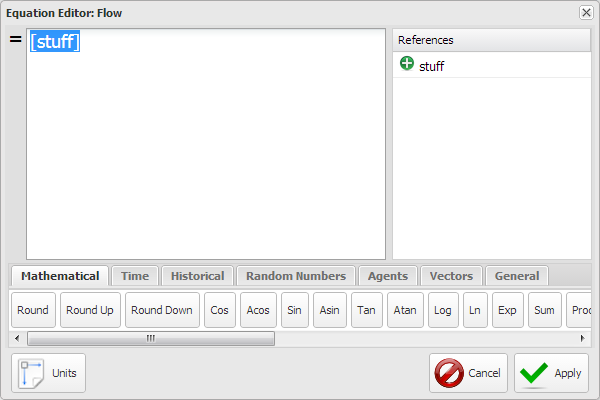
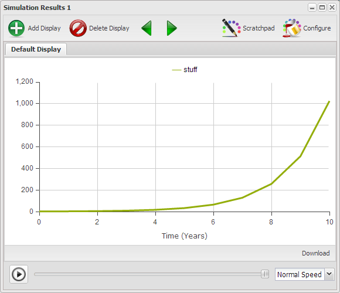

This chapter is intended to provide the reader with enough experience with the basic elements of the modeling environment such that they can construct simple balancing and reinforcing loops. Supporting aspects of the environment necessary to run these models will also be described. This will build on the elements presented in the previous chapters and is intended to be an introduction, not an exhaustive dissertation on modeling and simulation theory. The intent is to encourage the reader to develop and play with models, not chase them from the room screaming in fear never to return again.
Figure 1 is the last model from the previous chapter. The intent in this chapter is to acquaint you with enough of the modeling environment such that you can recreate these structures. In the process it is hoped that you will come to understand how it is that these three structures are essentially the building blocks for all the models you will ever build. Or at least almost.
** Figure 1. Similar Structures/Different Behaviors
Some might look on the blank canvas and hesitate not knowing where to start. You will be far better off if you look on the blank canvas as a gift of freedom which allows you to start anywhere. You will come to understand that if you approach modeling appropriately it won't matter where you start, you'll still end up with a meaningful model.
In the next few segments you will learn how to create on this canvas the two basic structures from which all models are constructed.
Notice in Figure 2 that similar tools are grouped on the \u{Toolbar}. Only a portion of the \u{Toolbar} is displayed though it's enough for what will be covered in this section.
To use any of the \u{Primitives} or \u{Connections} you click on the icon on the \u{Toolbar} to select it, then you click on the canvas where you want it located, or used. For each tool there are a set of allowed uses. Once you place the item on the canvas it is named for what it is, with that name selected so you can type in the name you want. Names can contain any characters except braces "{}", brackets "[]", parentheses (), and quotes '. If the label is not selected you can double-click on it to select the label and then enter a new one, or you can enter the label in the \u{Configuration Panel} though we'll address that in a bit more detail later.
Practice placing \p{Stock} and \p{Variable} \p{Primitives} on the blank canvas in Figure 2 and naming them. You can remove a \p{Primitive} by clicking on it to select it and then pressing the \u{Delete} key or clicking the \u{Delete} button in the \u{Actions} section of the \u{Toolbar}. Note that the \u{Save} option is disabled so you won't be able to save what you create. Note: This is only for the review copy. In the final copy you will be able to save what you create.
\p{Stocks} and \p{Variables} are connected using \p{Flows} and \p{Links} and there are very explicit rules associated with these connections. The allowed connections are depicted in Figure 3.
** Figure 3. Valid Primitive Connections
If \p{Use Links} or \p{Use Flows} is selected in the \u{Connections} segment of the \u{Toolbar} then when you mouse over an element of a model a little right pointing arrow shows up at the center of the element. You always draw a \p{Link} or a \p{flow} from one element to another and the arrow on the element points in the direction you draw the connection. If neither \p{Use Links} or \p{Use Flows} is selected then there will be no right pointing arrow when you mouse over the element.
Click on the Set Up button on Figure 3, answer OK to both questions, and then repeatedly click Display to walk though a description of the valid connections between Stocks and Variables.
Hopefully the rules associated with the connections were easy to understand. Just remember that Flows represent the movement of stuff while Links only communicate the value of something from one location to another.
The valid primitive connections of Figure 3 are described as follows.
A Flow adds stuff to a Stock, subtracts stuff from a Stock, or moves stuff from one Stock to another. The only way to change the quantity of stuff in a Stock is with a Flow.
A Link is used to communicate a value from one element to another. There is no flow of stuff through the link itself. The communication is considered to be instantaneous.
When you draw a link from one element to another it is created as a straight line. There are times when you would prefer that the connection be other than a straight line to make the diagram easier to understand. You can turn a straight line into a multiple segment line as follows.
Go back to Figure 2 and recreate Figure 3 for yourself. Actually making the connections helps develop a level of familiarity which will serve you well in the long run.
To this point you've learned how to develop a static picture of a model. It actually is a model and provides a sense of the relationships between the various elements of the model. What it doesn't give you a sense of the dynamic nature of these interactions over time. What are the implications of the relationships? In the next few sections you'll learn how to bring your model to life.
Look at the pictures in Figure 4 and ask yourself what it is that these pictures have in common. The pictures all represent very different kinds of things, some living, some not, though there is a characteristics they all have in common. Have you figured it out?
** Figure 4. Common Property # 1
Maybe you notice the rabbits from the previous chapter? The things depicted in the various images all grow in one way or another, and some faster than others.
Lets use Figure 5 to construct a basic growth structure and in the process you'll learn about several of the parameters associated with the different elements of a model.

** Figure 6. Your First Model Output
Notice that the model ran for 20 years. That's because we used the default Time Settings.
Open the Time Settings dialogue associated with Figure 5 and setup and run the model for different values of Simulation Length and Time Units.
** Figure 7. Simulation Time Settings
Notice that in each case what you get is a rising slope for different time periods and at different angles. What you perceive in the graph is referred to a linear growth though this growth doesn't actually represent the growth associated with the images depicted in Figure 3. In those situations growth is actually dependent on the size of the accumulation or stock to begin with.
If we evolve the Figure 5 model into Figure 8 so the flow is dependent on the amount of stuff we find the growth to be very different.
** Figure 8. Feedback Dependent Growth
Figure 8 represents only a couple of changes from Figure 5 as follows.

** Figure 9. Equations Editor:Flow
The result of the run from the model in Figure 8 is depicted in Figure 9. The value after 10 Years is 1,024 which you should realize is just 2^10 as expected because we started with a value of 1 and doubled it every year. This curve is referred to as an exponential growth curve.

Notice that the curve in Figure 10 is a bit choppy where it turns up. Run the model in Figure 8 with a Time Step of .5, .25, .125, .0625 and compare the results. What questions are raised by the the results?
The \u{Time Units} and \u{Time Step} selected for a model should be consistent with the time frame and level of detail of the model. You probably wouldn't develop a model about filling a bathtub with water and use \u{Time Units} of months. Minutes are probably more appropriate for this model. The \u{Time Step} is then selected to ensure none of the relevant transitions associated with the dynamic nature of the model are missed. A \u{Time Step} of .25, meaning 15 seconds, is probably sufficiently small to ensure there are no transitions missed.
Trial is actually the most appropriate approach to determine if you have an appropriate \u{Time Step} size. If you think .5 is appropriate then run the model with 1, .5, and .25 and if the results for 1 and .25 don't differ from .5 then you're probably OK. If .25 produced a different result then compare the .25 result with the .125 result. Once you get two runs where the values don't change then use the larger one.
Given this guidance how would you interpret the results you experienced in Exercise 2-5?
Consider the images in Figure 4 and consider what \u{Time Units} and \u{Time Step} you would use in a model representing the growth in each of these areas.
The model in Figure 8 is for a Savings Account that is defined as compounding annually. This means that the most appropriate {Time Units} is years with a \u{Time Step} of 1. There are no other transitions in this model that need to be accommodated and running this model with any \u{Time Step} other than 1 will result in a less accurate result.
Change the labels, values and simulation time settings for the model in Figure 8 for several of the contexts presented in Figure 4 and then run the models. What becomes apparent from this exercise?
One aspect of trying to model the contexts of Figure 4 that should have become apparent is that there is a piece of the model that's missing.
** Figure 11. Feedback Dependent Growth
The model in Figure 11 adds a factor, which is allowed to vary between 0 and 1, which is simply used to govern the flow. Mouse over the Flow and click the equal (=) sign to view the formula governing the flow.
Use the model in Figure 11 to implement the models in Exercise 2-7. Does this structure allow you to construct more realistic representations of the contexts presented in Figure 4?
End of Chapter